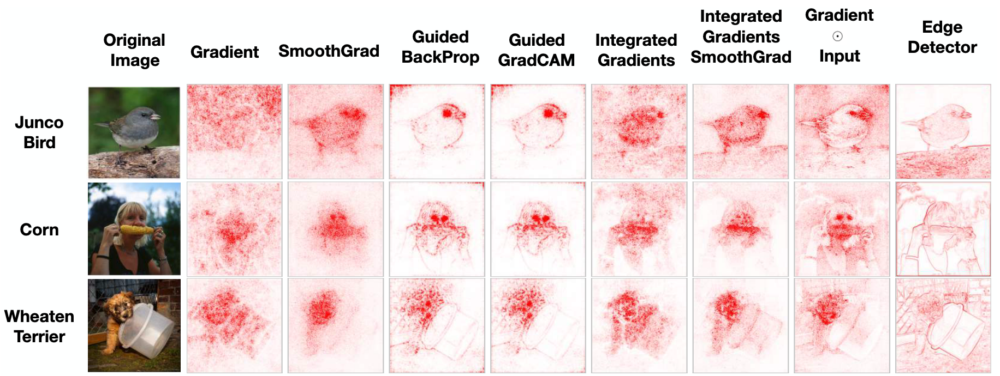
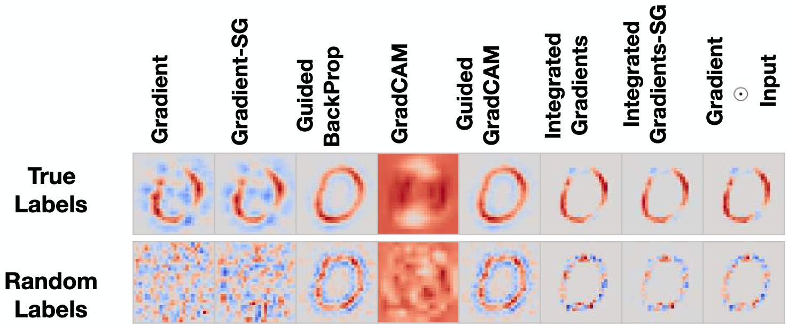
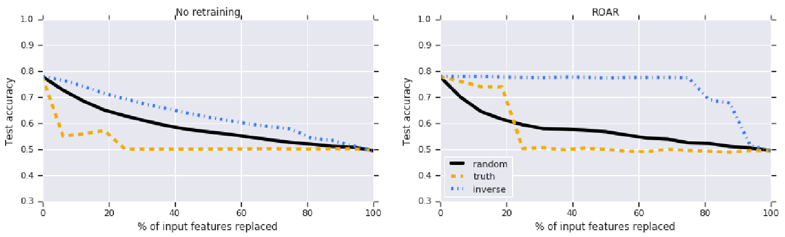
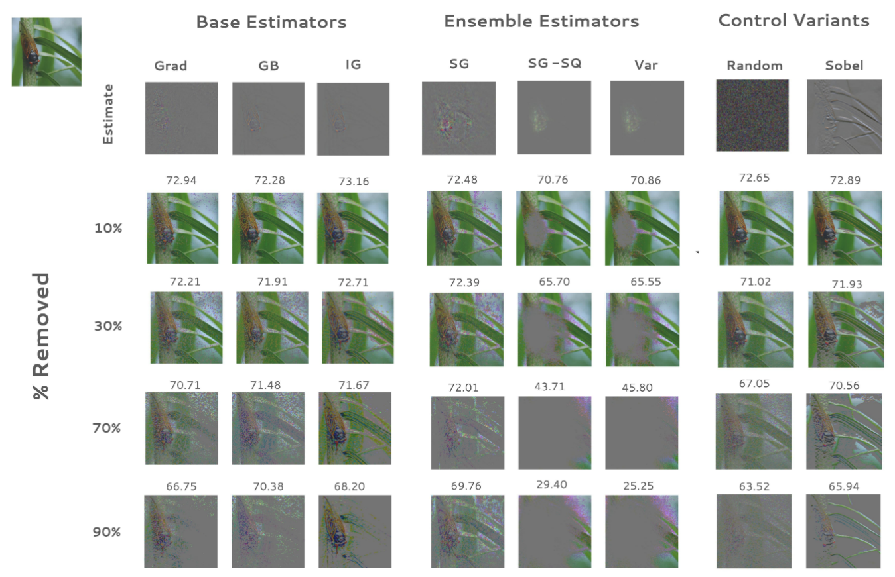
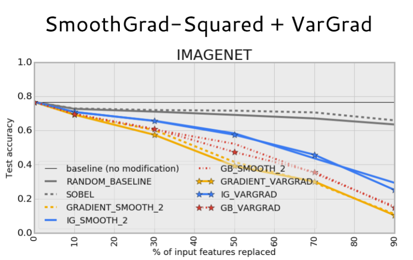
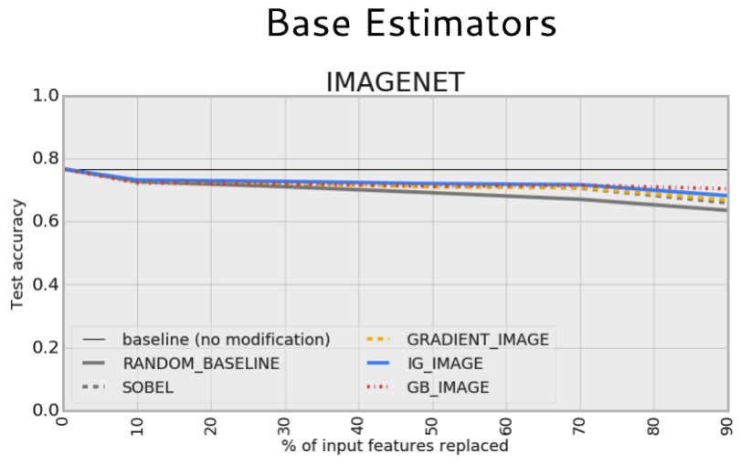

20. Sanity Checks and Benchmarking
application to case study
sanity checks
remove and retrain
Learning Outcomes
- Analyze large-scale foundation models using methods like sparse autoencoders and describe their relevance to problems of model control and AI-driven design.
- Within a specific application context, evaluate the trade-offs associated with competing interpretable machine learning techniques.
Readings
- Adebayo, J., Gilmer, J., Muelly, M., Goodfellow, I., Hardt, M., & Kim, B. (2018). Sanity Checks for Saliency Maps. doi:10.48550/ARXIV.1810.03292
- Captum - Model Interpretability for Pytorch. Getting started with Captum - Titanic Data Analysis. (n.d.). https://captum.ai/tutorials/Titanic_Basic_Interpret
Dataloader
Getting predictions
Gradient-based explanations
Integrated gradient explanations
SHAP explanations
Exercise: Saliency-based Model Critique
Sanity Checks
Independence from Model
Observation r Citep(bib, "sanity_checks"): Many saliency methods are invariant to model parameters and data labels.
Visual appeal \(\neq\) faithfulness.

Edge Detection Analogy
Guided Backprop ≈ edge detector (no model/data dependence).
Highlights boundaries via non-linear image processing, not learned features.
Model randomization check
- Randomize weights layer-by-layer
- Compute saliency maps for original vs. randomized model
- Faithful method: maps differ significantly
Results: Gradients/IG pass. Guided Backprop fails.
Cascading randomization
- Algorithm. Randomize weights starting from the top (Logits) down to the bottom (Input).
- Evaluation. A faithful method should show a visual degradation that “cascades” as more weights are destroyed.
<img src=’figures/cascading_randomization.png” class=“center”/>
Data randomization check
Train on \(\{(x_i, \tilde{y}_i)\}\) where \(\tilde{y}_i\) are random permutations.
Model trained on random labels should produce noisy saliency maps.
Many methods still highlight “objects” (spurious structure).

ROAR
Removing features
Can we evaluate feature importance without relying on human visual bias?
- KAR (Keep and Retrain). Keep the top \(t\%\) features, mask everything else.
- ROAR (Remove and Retrain). Mask the top \(t\%\) features, keep everything else.
Why Retrain?
Masking creates distribution shift. Model sees OOD inputs (black squares).
Performance drop reflects: - Information loss (what we want), OR - Mask artifact (confound)
Solution: Retrain on masked data to isolate information loss.
ROAR Benchmark
Remove top \(t\%\) important pixels, retrain from scratch.
Measure accuracy drop as function of \(t\).
Better method \(\implies\) steeper drop (removed truly informative pixels).
Synthetic Validation
Generate \(x \in \mathbb{R}^{16}\) with 4 informative features:
\[x = \frac{az}{10} + d\eta + \frac{\epsilon}{10}, \quad y = \mathbb{1}(z > 0)\]
where \(z, \eta, \epsilon \sim \mathcal{N}(0,1)\) and \(a \in \mathbb{R}^{16}\) is nonzero only in 4 positions.
Synthetic Validation
Fit least-squares model.
- Ground truth ranking (known informative features)
- Random ranking
- Inverted ground truth (worst case)
Results
- Without retraining: All methods appear to work (distribution shift confound)
- With ROAR: Correctly identifies worst-case estimator at 75% threshold
- SmoothGrad-Squared, VarGrad outperform base methods
ROAR Results
Lower curve \(\implies\) more informative feature selection.

ROAR Benchmark

Baseline: Random Removal
Key finding: Guided Backprop, IG, Gradient ≈ random removal on ImageNet.
These methods failed to identify informative features.
Ensemble variants of IG do better.
ROAR Benchmark

ROAR Benchmark

Pseudocode
For \(t \in \{0.1, 0.3, 0.5, 0.7, 0.9\}\): 1. Generate saliency \(\varphi\) for dataset \(\mathcal{D}\) 2. Mask top \(t\) pixels with mean: \(\tilde{x}_i = x_i \mathbb{1}(\varphi_i < q_t) + \mu \mathbb{1}(\varphi_i \geq q_t)\) 3. Initialize \(f_{\text{new}}\), train on \(\{(\tilde{x}_i, y_i)\}\) 4. Record \(\text{Acc}(f_{\text{new}}, \tilde{\mathcal{D}}_{\text{test}})\)
Plot accuracy vs. \(t\).